Для подключения использовалась программа PuTTY. Настройки:
kubsu-dev.ru58528 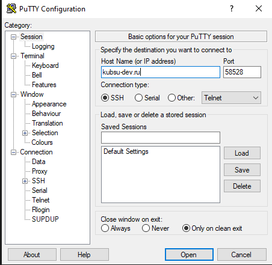
Введён логин u82323 и пароль. После успешного входа отображается приветствие Ubuntu.
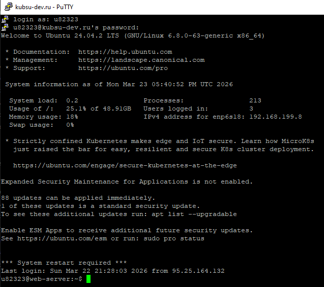
ping -c 5 kubsu.ru
Утилита ping отправляет ICMP-запросы. В первой строке вывода указан IP-адрес.
Результат: IP-адрес сервера kubsu.ru – 185.13.84.92. Все 5 пакетов доставлены, потерь нет, среднее время ответа – 3.45 мс.
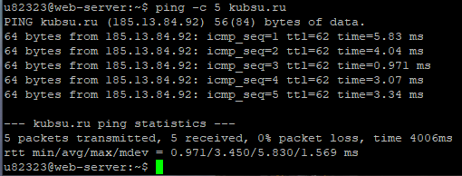
nslookup -type=A kubsu.ru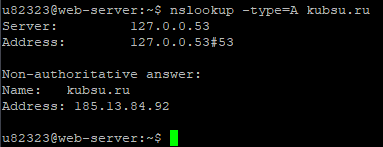
nslookup -type=MX kubsu.ruПолучены три почтовых сервера:
mx2.kubannet.rumx.kubannet.rumx.kubsu.ru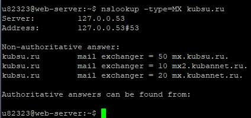
nslookup -type=A kubsu-dev.ru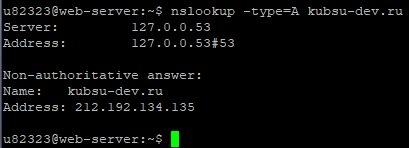
nslookup -type=MX kubsu-dev.ruДомен не имеет почтовых серверов (ответ No answer). В авторитативном ответе указаны DNS-серверы:
nsl.nameself.comsupport.regtime.net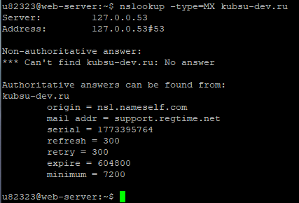
whois kubsu.ruДата регистрации: 1998-03-28T12:18:30Z (28 марта 1998 года).
Срок действия оплачен до 30 апреля 2026 года.
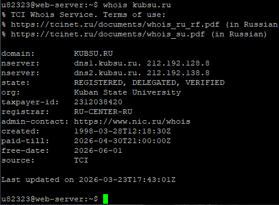
whois kubsu-dev.ruДата регистрации: 2020-02-12T15:55:06Z (12 февраля 2020 года).
Срок действия оплачен до 12 февраля 2027 года.
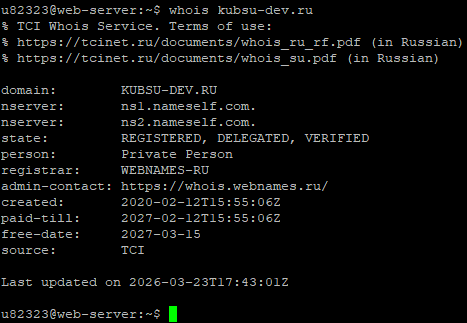
laba1 собраны все скриншоты и файлы index.html, style.css.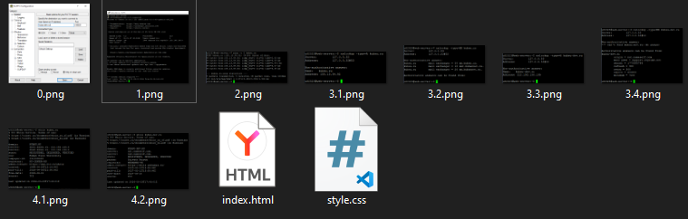
git init git add . git commit -m "first commit" git branch -M main git remote add origin https://github.com/MinhThuTanya/web-hw1.git git push -u origin main
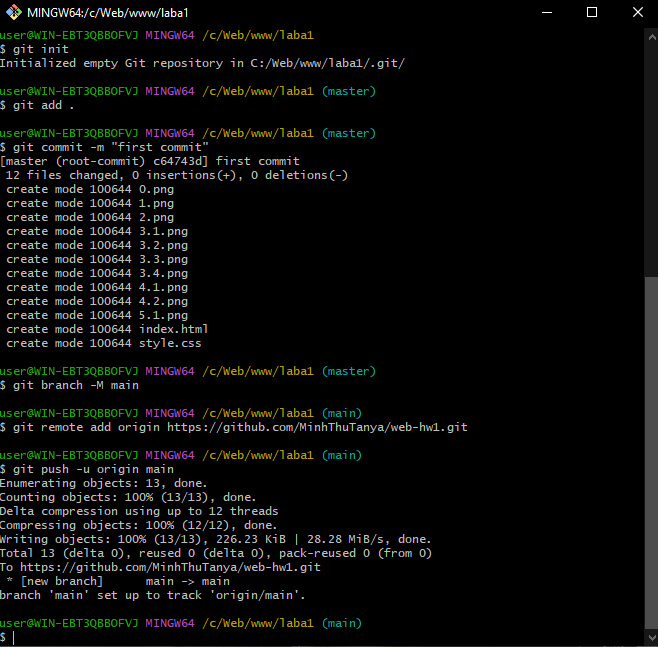
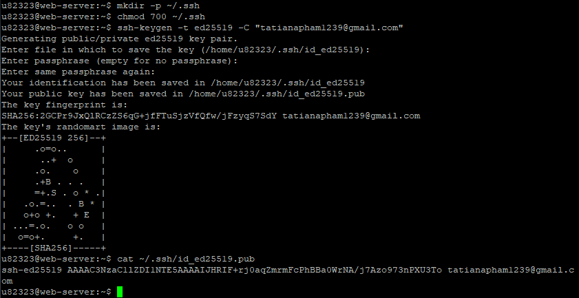
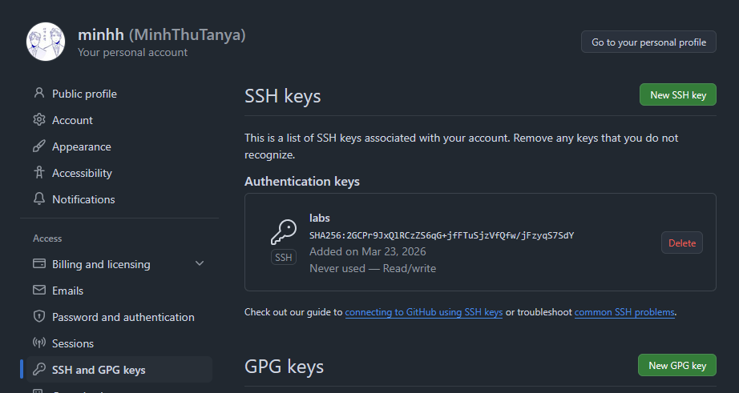
git clone git@github.com:MinhThuTanya/web-hw1.git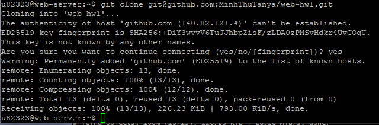
mkdir -p ~/www/hw1 cp -r ~/web-hw1/* ~/www/hw1/ ls ~/www/hw1/
index.html.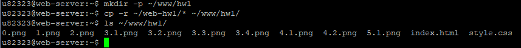
http://u82323.kubsu-dev.ru/hw1/index.html (проверено визуально).kubsu-dev.ru, порт 58528).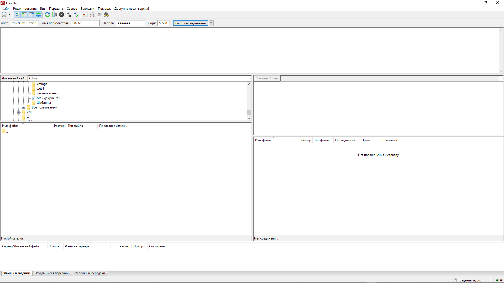
/home/u82323/www/hw1.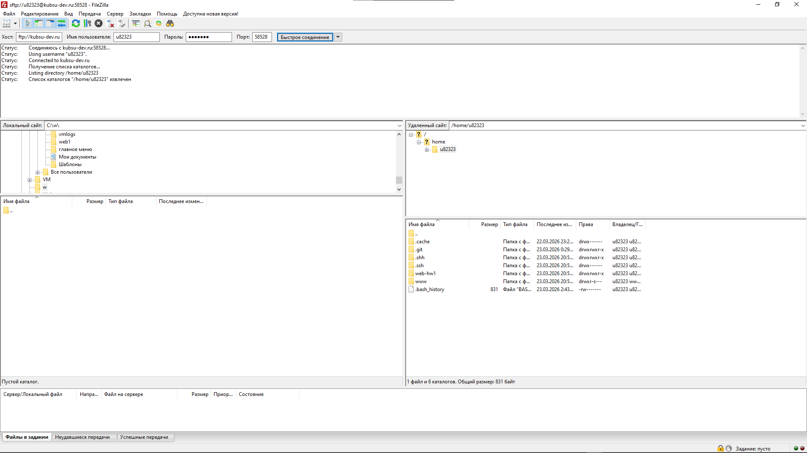
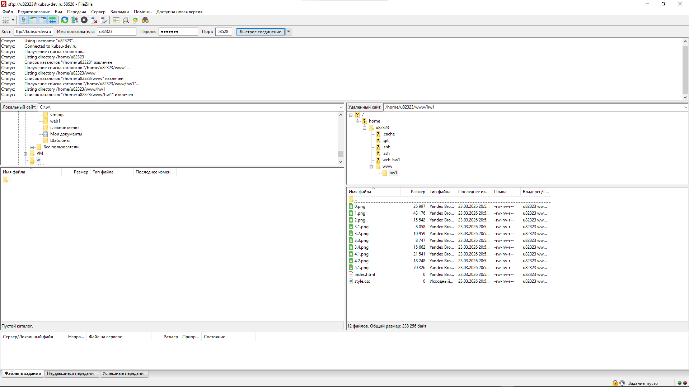
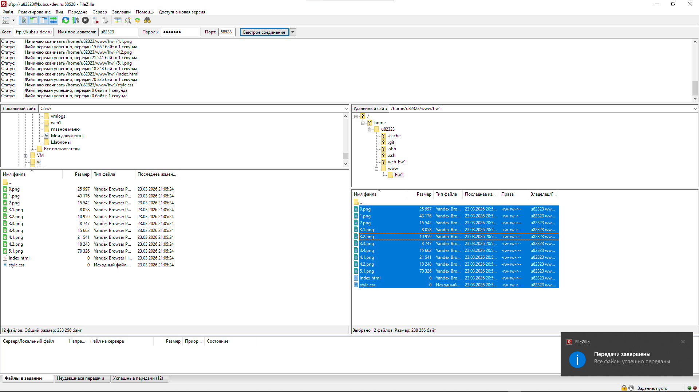
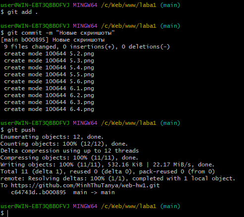
git pull и повторное копирование в ~/www/hw1.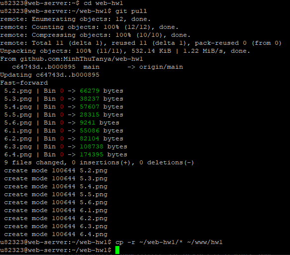
Отчёт составлен на основе выполненных скриншотов. Все этапы работы задокументированы.